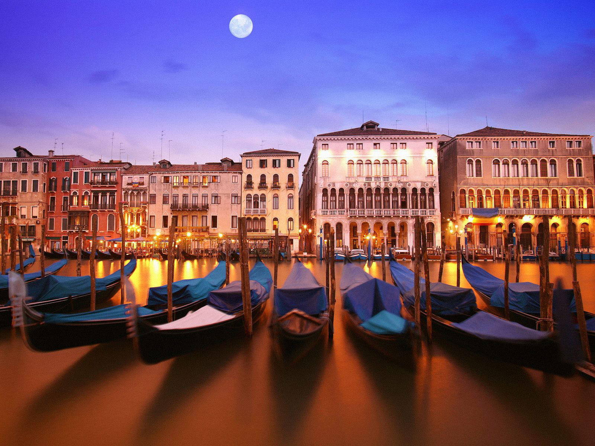

Venice
Venice, the capital of northern Italy’s Veneto region, is built on more than 100 small islands in a lagoon in the Adriatic Sea. It has no roads, just canals – including the Grand Canal thoroughfare – lined with Renaissance and Gothic palaces.
